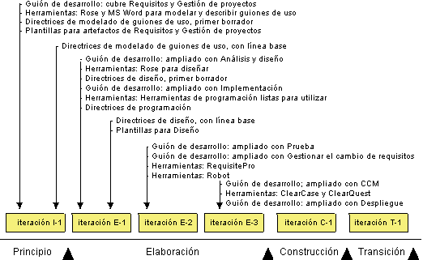

|
En estas directrices se describe cómo implementar procesos y herramientas en un proyecto de desarrollo de
software mediante la realización de las actividades descritas en la disciplina de entorno. Asimismo trata de
la disciplina de gestión de proyectos, que aborda la planificación del proyecto, la identificación de riesgos y la
gestión, supervisión y evaluación del proyecto.
Es importante comprender que hay distintas formas de implementar procesos y herramientas, según se describe en la
sección que trata sobre los enfoques para la implementación de
procesos y herramientas. El enfoque que elija depende del estado actual del proyecto y de la empresa circundante,
por ello, debe realizar una valoración del proyecto y de la empresa circundante (consulte Producto de trabajo: Valoración de la empresa de desarrollo).
En estas directrices se describen algunos enfoques posibles para la implementación de un proceso en un proyecto.
Además, en el Concepto:
Prácticas ambientales se describen algunas prácticas fundamentales que son de utilidad para la implementación
del entorno de un proyecto de software. Si desea más información sobre los aspectos de personalización de
procesos de la implementación de un proceso, consulte Personalización de
RUP.
Estas directrices generales se aplican en casi todos los proyectos:
-
Antes del inicio del proyecto: antes del inicio mismo del proyecto, las personas que actúan como ingenieros
de procesos, especialistas en herramientas y gestores de proyectos deben formarse en Rational Unified Process
(RUP). Es un aspecto clave para el éxito del proyecto. Si los miembros del proyecto no saben qué hacer,
probablemente no lo hagan bien.
-
Fase inicial: durante esta fase, se suele centrar la atención en entender cómo mejorar la forma en que
gestiona los requisitos (disciplina de requisitos) y cómo gestionar el proyecto (disciplina de gestión de
proyectos).
-
Fase de elaboración: al final de la fase de elaboración, todos los procesos y herramientas deben estar en su
lugar. La parte más importante de esta fase suele ser cómo realizar la gestión de cambios y configuración porque en
la fase de construcción, el trabajo lo llevan a cabo los equipos de desarrollo trabajando en paralelo.
-
Fase de construcción: en esta fase no se introducen herramientas ni procesos nuevos. La idea central es la
de producir el producto, y por lo tanto el entorno de desarrollo debe ser estable. En la fase de construcción, la
motivación es hacer que las personas que se han incorporado al proyecto recientemente consigan alcanzar el ritmo de
trabajo del proyecto.
-
Fase de transición: en esta fase no se introducen herramientas ni procesos nuevos. En la fase de transición,
la atención pasa de la mejora de procesos específicos del proyecto a las revisiones posmortem del proyecto, con lo
que se reúnen experiencias del proyecto actual, se resumen y se empaquetan con un formato que sea de utilidad para
proyectos futuros. Estas experiencias reunidas sirven como entrada para la mejora de los procesos y las
herramientas para el desarrollo de la siguiente evolución del producto.
La ceremonia del proceso ofrece una amplia variedad entre las diferentes empresas de desarrollo. Algunas tienen un
proceso muy maduro y tienen grupos dedicados a los procesos que se encargan de definir y mejorar los procesos de toda
la empresa. Otras se limitan a preocuparse de la personalización específica del proyecto.
El enfoque que se elija para personalizar el proceso del proyecto, depende en gran medida de la ceremonia del proceso
de la empresa, así como de algunos otros factores. Por ejemplo:
Si desea más información sobre los factores que afectan a la implementación de procesos, consulte Directriz: Discriminadores del proceso.
Los siguientes son los enfoques básicos para la implementación de procesos y herramientas en un proyecto de desarrollo
de software:
-
"Cambiar todo". Esto significa que el proyecto adopta todo el producto RUP y un
conjunto completo de herramientas nuevas.
-
"Mejorar el proceso y las herramientas". Esto significa que el
proyecto decide mejorar algunas áreas del proceso y las herramientas mediante la adopción de partes de RUP y de
herramientas de soporte.
La cantidad de RUP que vaya a adoptarse y el número de nuevas herramientas que se decida a implementar en un proyecto
específico dependen de varios factores. Estos factores se describen en la Directriz:
Discriminadores del proceso. Se trata de factores que suelen descubrirse durante la valoración del proyecto y
de la empresa circundante. Esta información se captura en el Producto de trabajo: Valoración de la empresa de desarrollo.
En un proyecto se puede decidir adoptar todo el producto RUP y empezar a utilizar un nuevo conjunto de herramientas por
una o varias de las razones siguientes:
-
No hay ningún proceso ni herramienta en su sitio y el proyecto lo necesita todo (un proceso completo y todas las
herramientas).
-
Todo el personal, o la mayoría, es de nueva contratación y no existe una forma de trabajar aceptada por todos.
-
El proyecto cambiará a una nueva tecnología para la organización, lo que significa que el proceso y las
herramientas existentes serán obsoletas.
Si decide introducir el producto RUP completo y todas las herramientas en el proyecto, es importante que implemente el
proceso y las herramientas de forma incremental. Al implementar el proceso y las herramientas en un procedimiento paso
a paso, es más fácil gestionar los riesgos y hace que estos cambios sean menos abrumadores para las personas del
proyecto. En el diagrama siguiente se ilustra el momento en que se desarrollan los diferentes productos de trabajo de
entorno a lo largo del ciclo vital de un proyecto.

La evolución de los productos de trabajo de entorno en un proyecto en el que "todo es nuevo".
Comentarios sobre el plan:
-
General: la disciplina de modelado empresarial se omite por completo.
-
Principio: se centra en la introducción de las disciplinas de requisitos y de gestión de proyectos. Para
reducir el número de nuevos factores, no se introducen las partes de la interfaz de usuario que corresponden a los
requisitos. El gestor de proyectos decide las partes de las actividades de la disciplina de gestión de proyectos
deben utilizarse.
-
Iteración de elaboración E-1: el análisis y diseño y la arquitectura son lo más importante de la fase de
elaboración. Las pruebas automatizadas y la gestión de cambios y configuración no son tan importantes a estas
alturas del proyecto porque el número de miembros del proyecto es relativamente bajo. Puede introducirse más
adelante en el proyecto.
-
Iteración de elaboración E-2: se introducen las herramientas y el proceso de prueba para automatizar las
pruebas. Rational RequisitePro se introduce para gestionar para gestionar los cambios de requisitos.
-
Iteración de elaboración E-3: en la fase de construcción, el trabajo lo realizan los equipos de desarrollo
trabajando en paralelo. Por lo tanto, es fundamental tener la disciplina de gestión de cambios y configuración en
su sitio al finalizar la fase de elaboración. El gestor de despliegue decide cómo realizar la disciplina de
despliegue.
-
Construcción: no se introduce nada nuevo. Desde la perspectiva del entorno, la atención durante la fase de
construcción se debe centrar en que todo el personal nuevo se ponga al ritmo del proyecto.
-
Transición: no se introduce nada nuevo. El proceso y las herramientas se perfeccionan según convenga.
El personal de un proyecto en una empresa que tenga en su sitio el proceso y las herramientas tiene la posibilidad de
desarrollar un sistema. Estas personas disponen de una forma común de trabajar, que es un proceso que puede estar más o
menos documentado.
El objetivo a largo plazo puede ser la adopción de todo el producto RUP y un conjunto completo de herramientas nuevas.
Sin embargo, el objetivo a corto plazo es mejorar una de las distintas áreas de soporte del proceso y las herramientas.
Estas deben ser áreas con un gran potencial de mejora.
En el diagrama siguiente se muestra un ejemplo de un proyecto que ha decidido adoptar la disciplina de requisitos junto
con las herramientas, como RequisitePro y Rational Rose, para la mejora de la gestión de los requisitos. Asimismo, el
proyecto ha decidido introducir la disciplina de análisis y diseño.
La evolución de los productos de trabajo de entorno cuando se mejoran los requisitos y el análisis y el diseño.
Es importante entender que el diagrama anterior sólo es un ejemplo. Las partes del proceso que decida mejorar serán
distintas en cada proyecto, dependiendo de los problemas y las necesidades de un proyecto determinado. Debe valorar el
proyecto y la empresa circundante para averiguar las partes del proceso que desea mejorar o las herramientas que desea
introducir.
A continuación se ofrece un ejemplo de una iteración en la fase inicial en la que se introduce la disciplina de
requisitos. Cada entrada del diagrama de Gantt se describe con detalle después del diagrama.
Ejemplo de una iteración en la fase inicial.
El flujo de trabajo básico descrito para el inicio clásico de RUP se aplica con estas variaciones y extensiones.
Gestión de proyectos
Lleve el proyecto de la idea inicial a un punto en el que se puede tomar una decisión razonada de cara a
continuarlo o abandonarlo. Los resultados principales son bocetos iniciales del Producto de trabajo: Caso de negocio, del Producto de trabajo: Plan de desarrollo de software y del Producto de trabajo: Lista de riesgos.
Identificar los riesgos del proyecto, incluidos los riesgos asociados a la implementación de nuevos procesos y
herramientas. El resultado es el Producto de trabajo: Lista de riesgos.
Planifique las fases. El resultado principal es la sección titulada Plan de proyecto en el plan de desarrollo de software. Esto incluye el plan de las fases
en el que puede encontrar los principales objetivos con sus criterios de consecución, incluidos los criterios para
la disciplina de entorno.
Nota: el proceso de desarrollo personalizado tiene un enorme impacto
sobre el plan de desarrollo de software y viceversa. Por lo tanto, el
desarrollo del plan del proyecto y la personalización del proceso deben coordinarse.
Planifique la iteración con detalle, incluida la disciplina de entorno y todas las otras disciplinas. El resultado
principal es un Producto de trabajo: Plan de iteración, con todos los detalles de
actividad y las tareas de la disciplina de entorno, así como todas las otras disciplinas del proceso.
El uso de procesos y herramientas se evalúa como parte de la evaluación de la iteración. Los resultados son:
El gestor de proyectos supervisa el trabajo diario, incluido el proceso y las herramientas.
Al final de la iteración, los riesgos vuelven a evaluarse, incluidos los riesgos asociados con el proceso y las
herramientas. Algunos riesgos se mitigan durante la iteración y se identifican nuevos riesgos. El principal
resultado es un Producto de trabajo: Lista de riesgos actualizado.
Requisitos
Sin cambios específicos.
Prueba
Algunos aspectos logísticos del Producto de trabajo: Estrategia de prueba están definidos de
forma que proporcionan el razonamiento inicial para los recursos del esfuerzo de prueba.
El diseñador de la prueba y un pequeño equipo de verificadores confirma si los elementos clave del enfoque de
prueba funcionarán contra el Producto de trabajo: Arquitectura de prueba de concepto y se
verifica que las selecciones de componentes de terceros sean verificables.
Entorno
Evalúe el estado actual de la organización y decida las partes del proceso y las herramientas sobre las que desea
centrarse en las primeras iteraciones. En este caso el proyecto ha decidido, basándose en la valoración, empezar la
implementación del proceso y las herramientas.
Nota: el plan de desarrollo de software tiene un impacto muy
importante sobre el proceso de desarrollo personalizado y viceversa. Por lo
tanto, la personalización del proceso y el desarrollo del plan del proyecto deben coordinarse.
Los resultados son:
Prepare el proceso y las herramientas para la disciplina de requisitos junto con las herramientas de soporte de
forma que el personal del proyecto pueda empezar a utilizarlos. (Desde luego, pueden prepararse otras disciplinas).
Consulte Tarea: Personalizar el proceso de desarrollo para el proyecto.
Asegúrese de que el personal del proyecto comprende cómo utilizar el proceso de desarrollo, las directrices de
modelo de guión de uso y las herramientas. Además de los cursos de formación estándar, es recomendable organizar un
taller de un día en el que los miembros del proyecto obtengan alguna experiencia directa. Consulte Tarea: iniciar el proceso de desarrollo.
Los resultados de realizar la actividad son:
-
El proceso de desarrollo en el que la disciplina de requisitos
se describe con detalle, e incluye
-
-
Las herramientas de requisitos las configura y las prepara para
su uso el personal del proyecto.
El administrador del sistema da soporte al desarrollador durante la iteración.
Formación
-
Todos los miembros del proyecto deben asistir a un curso que ofrece una visión general
de RUP y así tener una idea general del ciclo vital del proyecto.
-
El personal que trabaja en la disciplina de RUP que se está "implantando"
debe asistir a un curso en el que aprendan los detalles de la disciplina.
Mentor
Los mentores son claves para la implementación satisfactoria de un proceso. En general, se necesitan los mentores
siguientes:
-
Mentor del proceso 50%. Alguien que actúa como ingeniero de procesos para
dar soporte al gestor de proyectos y a otras personas del proyecto en cuanto a la utilización y configuración del
proceso.
-
Mentor <específico de la disciplina> 50%. Alguien que facilita el
trabajo específico de la disciplina, mediante la dirección de talleres, la revisión de resultados y la respuesta a
preguntas concretas.
Si desea más información sobre mentores, consulte Concepto: Mentor. |